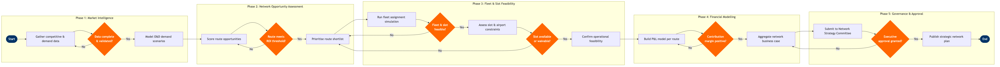

| Step | L4 Step Name | KPI / Target | Pain Point / Risk | Gate |
|---|---|---|---|---|
| 1.1 | Extract competitive schedule & capacity data | Market coverage: ≥95% of OAG universe validated within 5 business days | OAG data lags 48–72 hrs for LCC schedule changes; analyst must reconcile against GDS live availability | |
| 1.2 | Ingest historical O&D traffic & yield data | Demand model R² ≥0.90 vs actual bookings on back-test | MIDT coverage drops to ~60% for LCC-heavy markets where GDS penetration is low; distorts baseline | |
| 1.3 | Validate & cleanse market intelligence dataset | Data completeness ≥98% of target O&D pairs before model run | Macro data (GDP, tourism forecasts) sourced from multiple external vendors with inconsistent update cycles | ⚠ |
| 2.1 | Generate long-haul & medium-haul demand scenarios | Scenario variance within ±15% of base-case for primary markets | SkySYM scenario runtime scales poorly for networks >500 O&D pairs; overnight batch required for full network runs | |
| 2.2 | Score and rank route opportunities by strategic fit | Top-20 route list updated within 2 weeks of scenario generation | Scoring weights for 'strategic fit' are subjective; senior stakeholders override quantitative ranking without documented rationale | |
| 2.3 | Review route shortlist against network strategy guardrails | Shortlist approved within 5 business days of scorecard publication | No system-enforced guardrail check; planner reliance on manual KPI dashboard review risks missing constraints | ⚠ |
| 3.1 | Run fleet assignment optimisation for shortlisted routes | Fleet utilisation uplift ≥2% vs current plan in optimised output | SkyMAX optimisation assumes unconstrained maintenance slots; MRO visit conflicts discovered post-optimisation require manual iteration | |
| 3.2 | Assess slot & airport capacity constraints | Slot feasibility assessment completed ≥90 days before IATA scheduling conference | Slot availability at Level 3 airports (LHR, AMS, CDG) is opaque until conference; strategic plans regularly revised post-conference | ⚠ |
| 3.3 | Evaluate airport infrastructure & ground handling readiness | Infrastructure gap identified ≥12 months before proposed launch date | Ground handler capacity data at outstations not centrally held; planner must contact handlers individually, adding 3–6 weeks to cycle | |
| 3.4 | Confirm operational feasibility of candidate routes | ≥80% of shortlisted routes confirmed feasible without major constraint | Crew base restrictions and FAR Part 117 duty-time rules reduce feasible rotations, particularly for ultra-long-haul additions | ⚠ |
| 4.1 | Build unit revenue & yield forecast per candidate route | RASM forecast accuracy within ±8% of actuals on launched routes (tracked retrospectively) | NRM is calibrated on existing routes; forecast reliability for new O&D markets with no booking history is low — often requires manual analyst override | |
| 4.2 | Model direct operating costs per route | CASM model completed within 10 business days of receiving fleet assignment input | Airport charge schedules for new markets are not always available in SAP master data; finance team must source bilaterally from airport authorities | |
| 4.3 | Assess route contribution margin and breakeven load factor | Target contribution margin ≥12% in Year 2; breakeven load factor ≤75% | Sensitivity of breakeven load factor to fuel price is high; +10% fuel swing shifts breakeven by 4–6 ppts, making many routes marginal | ⚠ |
| 4.4 | Aggregate network business case for plan period | Network EBIT uplift ≥$150M over plan period vs do-nothing baseline | Network synergy benefits (connecting traffic uplift) are difficult to isolate and often overstated in bottom-up aggregation | |
| 5.1 | Package strategic plan for governance review | Briefing pack issued ≥5 business days before Network Strategy Committee meeting | Version control of the briefing pack is manual; late assumption changes from Revenue Management or Finance require last-minute slides rebuild | |
| 5.2 | Present plan to Network Strategy Committee | Committee decision reached in ≤2 review cycles (no more than 1 deferral per plan) | Committee quorum requires C-suite attendance; scheduling conflicts routinely delay decision by 2–4 weeks, compressing scheduling window | ⚠ |
| 5.3 | Publish approved strategic network plan & handoff to scheduling | Plan published in SkyWORKS ≤3 business days after committee approval | SkyWORKS baseline lock-in creates downstream rigidity; late executive changes after publication require formal change request and delay tactical planning |